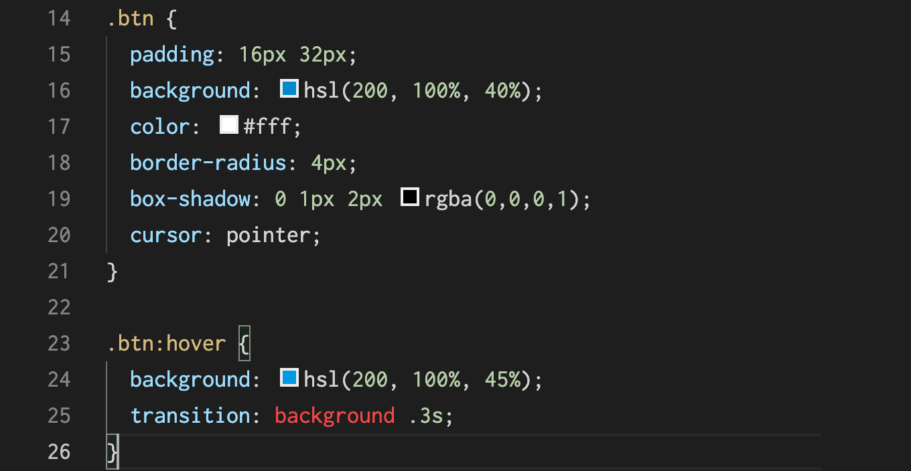
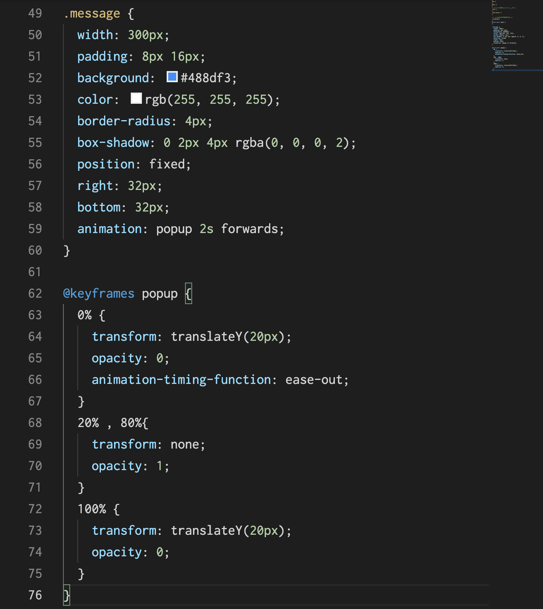

ふわっと色が変わるボタン
transitionでbackgroundに0.3秒つけている。

ローディングアイコン
Cの状態の円を回転させるアニメーション。
正方形にborderをつけ、border-right-color のみ
transparent（ボーダーの色を透明にする指定）にしている。
@keyflamesの0% と 100% は from 、 to と書いてあげても OK
ポップアップ
最初に少し下のほうに配置しておいて、そこからスッと上に出てきて
ちょっととどまった後に下にスッと消えていくような動き
先に表示するポップアップをつくってアニメを付けます
下から上でとどまって下にいくのですが、最後に上に戻ってくるのでforwardsを設定します。
@keyflameで同じ設定が並ぶ時はカンマ区切りで指定することもできる。
最初にパッと出てくるような動きは animation-timing-function を ease-out にしておくと良い。

ポップアップの注意事項
消えたメッセージはまだページ上に要素として残っているので、
何も設定しないとその下にボタンなどがあるとクリックできなくなる。
メッセージが消えたあと、マウスのイベントに反応しないように
pointer events というプロパティで、 ポップアップのkeyflameで100% の地点で pointer-events: none としてあげれば、
マウスのイベントに反応しなくなる。その下のボタンがクリックできるようになる
Hello!